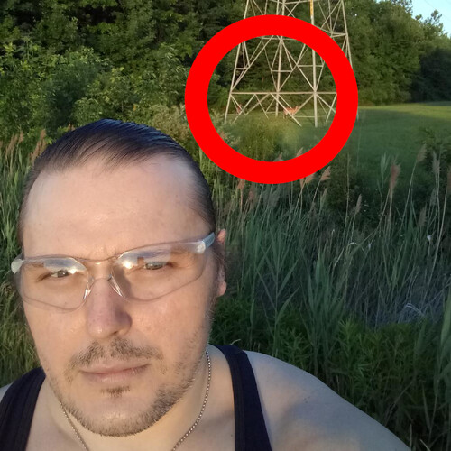

Deer: The Happy Little Horses

Deer: The Happy Little Horses
There is no normal way
to say:
To me, of course,
a Deer is like a little horse.
Since I like them a lot,
I had a wonderful thought.
I'd grab my phone and go,
take a photo.
I had to bicycle from my driveway,
all the way out to the highway.
And since they eat dinner at eight,
I had to hurry as not to be late.
(read super fast)
I arrived just on time,
hit the brake, stopped on a dime.
Got my phone out,
did a little turnabout.
And click... click, click, click,
didn't even need a selfie stick.
Say hello,
perfect photo.
And I took a few more,
just to be sure.
I really had a ball,
so decided I'd upload them all.
On my way back,
I had a little snack.
And pondered my rhyme,
to finish my poem on time.
I rate my adventure as ten out of ten,
"will do again"
[1]
[2]
[3]
[4]
[5]
[6]
[7]
[8]
[9]
[10]
[11]
[12]
Deer: The Happy Little Horses References
[1]: /image/xl-poetry-0473-photo-01.jpg
[2]: /image/xl-poetry-0473-photo-02.jpg
[3]: /image/xl-poetry-0473-photo-03.jpg
[4]: /image/xl-poetry-0473-photo-04.jpg
[5]: /image/xl-poetry-0473-photo-05.jpg
[6]: /image/xl-poetry-0473-photo-06.jpg
[7]: /image/xl-poetry-0473-photo-07.jpg
[8]: /image/xl-poetry-0473-photo-08.jpg
[9]: /image/xl-poetry-0473-photo-09.jpg
[10]: /image/xl-poetry-0473-photo-10.jpg
[11]: /image/xl-poetry-0473-photo-11.jpg
[12]: /image/xl-poetry-0473-photo-12.jpg